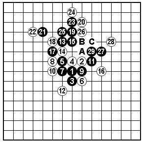
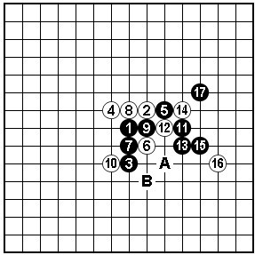
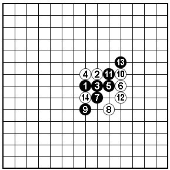
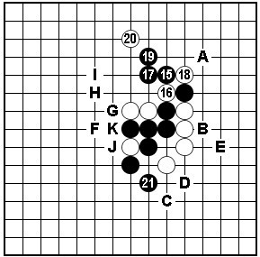
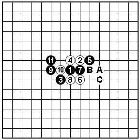

基础技巧学与用（二）转自李洪斌老师博客
#1 基础技巧学与用（二）转自李洪斌老师博客 作者：嵯峨 发表时间：2010-7-31 18:05:24
我们首先来看一个基础定式，如图一所示是《基础定式》一书“银月篇”第一图。

图一：我们先要熟练掌握本图中黑白攻防的各种变化（具体可参照书上解说）。这里，我们主要关注的是本图中一个常见的基本形，即黑13~17所构成的棋形在实践中的运用。以及在本形基础上，白棋常见的最强防（白18）和黑棋19、21的组合手段。请大家在棋形结构下功夫，别在序号上做文章

图二：至白14是《基础定式》明星篇中的一个定式。我们来看黑5、11、13所构成的棋形结构，以及白14的防守，黑15、17的组合手段与图一如出一辙。虽然，黑15也有其他胜法，例如黑15-A或B也都能胜。但是，在熟练图一的变化的基础上，在类似局面中会很快找到可供参考的有力下法。

图三：“云月”基础定式。现在轮到黑棋走，进攻的方向是上还是下？如何运用前面学过的内容？

图四：相信大家很快就能找到黑15~19的进攻思路，但问题在于白20防后，黑能直接套用之前的变化走A点吗？那样虽然局部白棋无防，但白22-B，23-21（看似夺回先手），24-C（留有E、D的四三胜），这样黑棋不行。通过这个变化，我们了解到在运用过程中要注意白棋是否有反先或者牵制的手段。切忌呆板的套定式，在能导入熟悉局面的同时，要仔细的分析和判断棋形差异所产生的影响。
基于以上分析，本图的黑21用意想必大家也就能理解了。这步棋先手阻止了白棋的反击手段，同时为此后的进攻埋下伏笔。如白22-C，黑23以下可以按照F~I的次序追胜。如白22-J或K，23-A可以成立。如白22-F，23-C黑胜。
当然，此形黑棋另有胜法，例如黑21-F，23-G也能黑胜，变化较本图简明。作为定式的学习，在同一局面下尽可能多掌握和比较各种胜法的异同之处，对初学者来说是很有必要的。

图五：斜月定式一型。通过前面的学习，很容易就能想到9~11的进攻思路。后面的变化过于繁杂，这里就不展开了。需要注意的是黑9-A~C虽然与左边同形，但是有盘端差异。这是初学者经常容易忽视的一个问题，需要引起足够的重视。
［ 岑小鱼 于 2010-7-31 19:12:44 时花20金币送鲜花一朵］
［ 有志青年 于 2010-7-31 21:03:29 时奖励此帖[金币加 20 威望加1］
#2 Re:基础技巧学与用（二）转自李洪斌老师博客 作者：嵯峨 发表时间：2010-7-31 18:06:14
额~~~~那篇麻烦删一下哈
#3 Re:基础技巧学与用（二）转自李洪斌老师博客 作者：嵯峨 发表时间：2010-7-31 18:09:43
另外来看的人建议在看一下一吧~~~两篇连着看~~嘿嘿~~ShowPost.asp?ThreadID=10520#4 Re:基础技巧学与用（二）转自李洪斌老师博客 作者：岑小鱼 发表时间：2010-7-31 19:12:57
好文章 学习了#5 Re:基础技巧学与用（二）转自李洪斌老师博客 作者：风儿湘子 发表时间：2010-8-1 17:51:33
要认真读完、理解图和文，头都大了